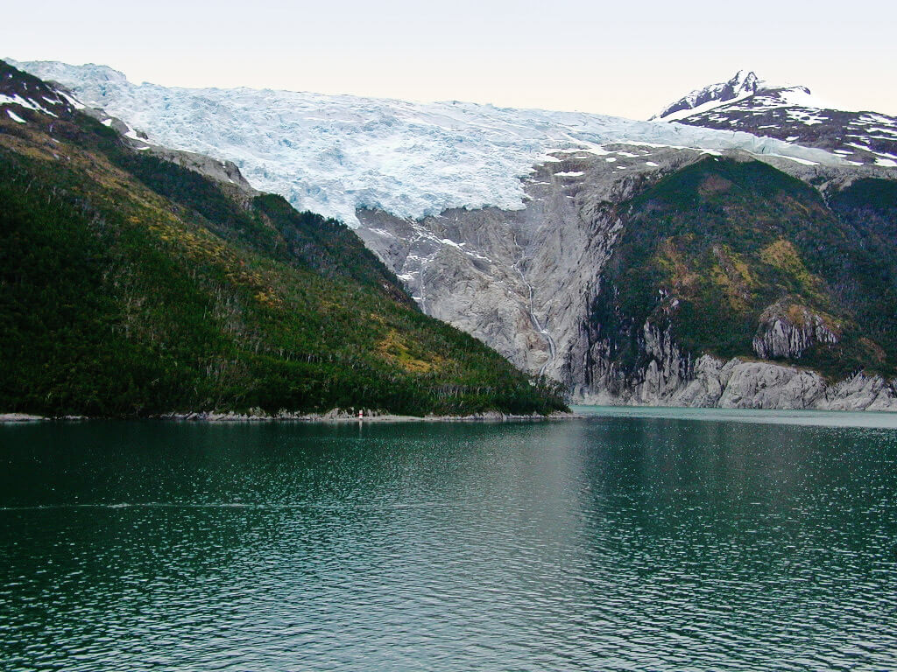
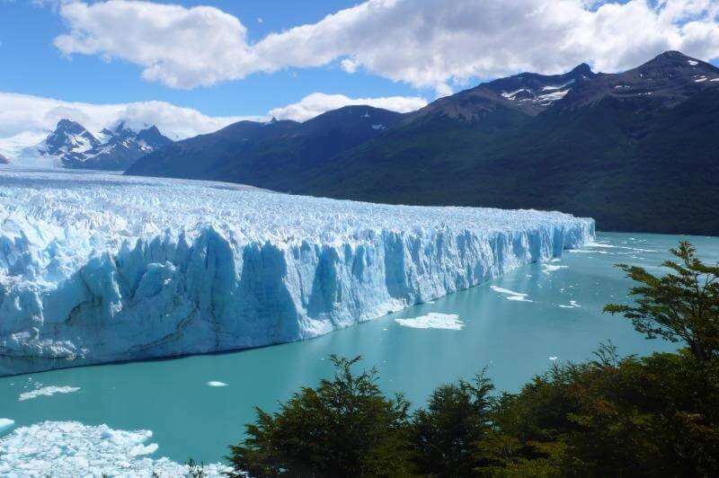
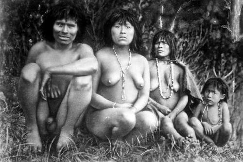
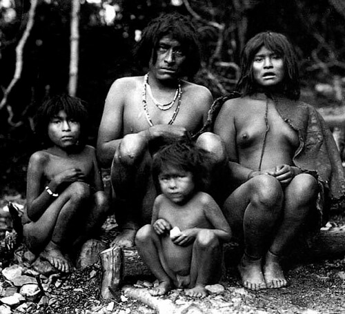
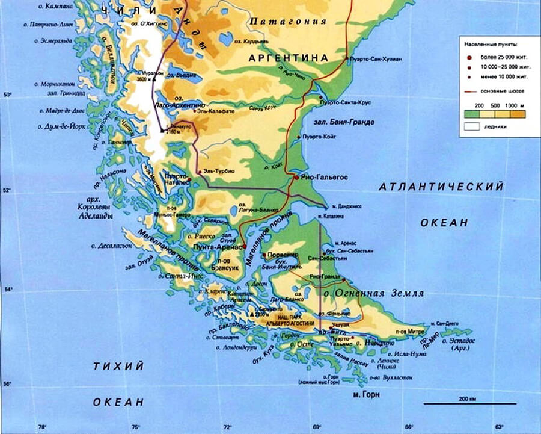
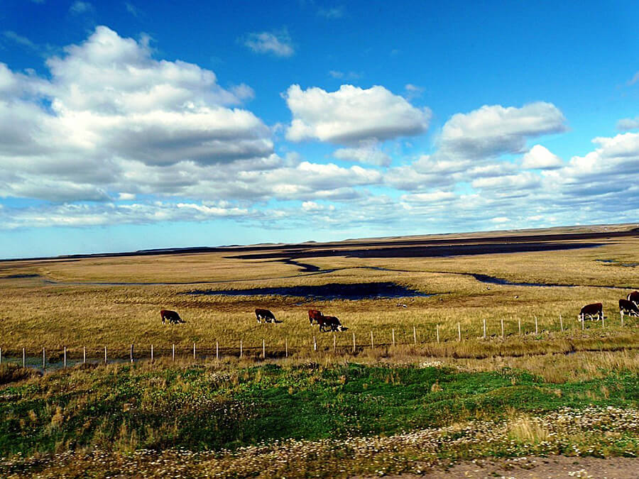
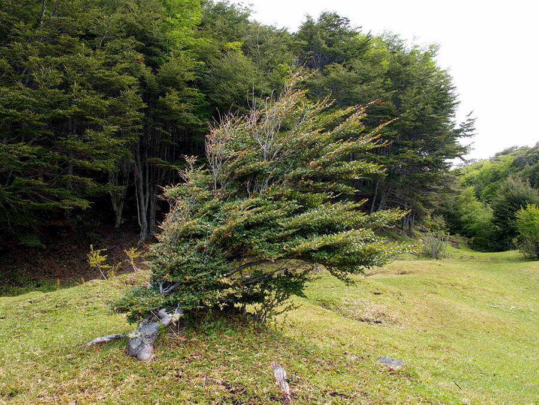
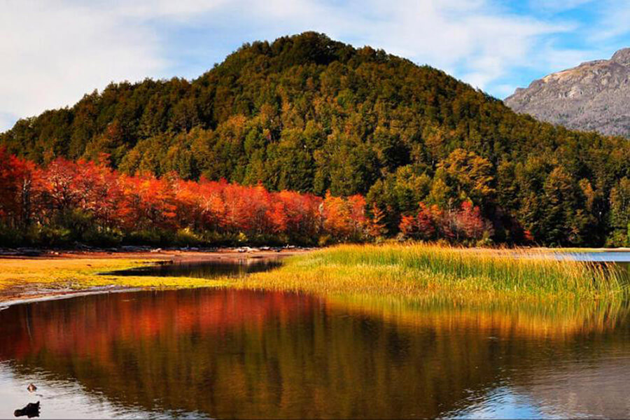
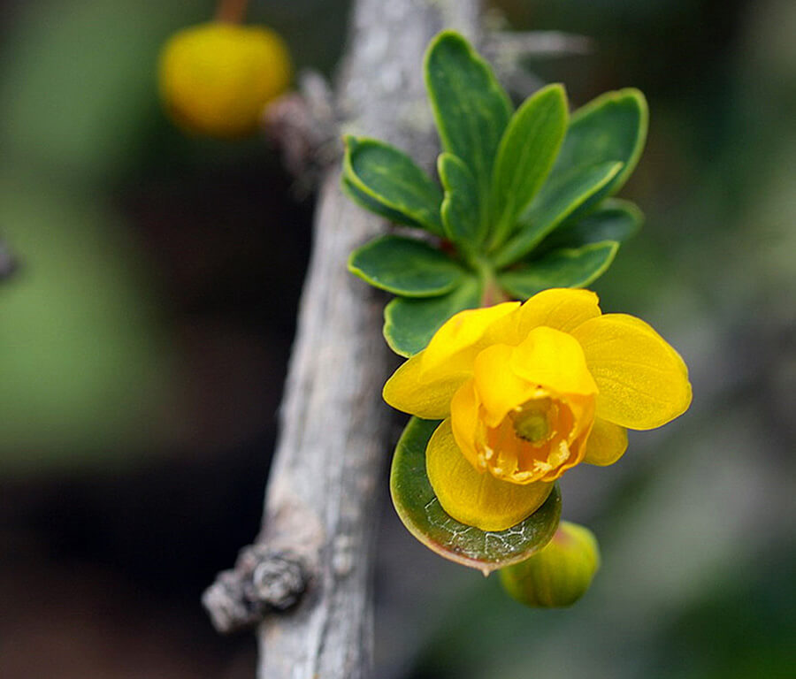

Когда из наших уст вырывается фраза: «Да хоть на край света...», мы даже не задумываемся, что тем самым упоминаем живописные просторы Огненной Земли (Tierra del Fuego), которая когда-то в результате глобальной прихоти природы была разлучена с белоснежными ледниками Антарктиды, а сейчас поделена между Чили и Аргентиной

Огненная Земля — самый крупный остров Южной Америки кажется одновременно и восхитительным, и очень неприветливым. До последнего ледникового периода он был соединен с материком. А сегодня здесь смешиваются воды Атлантического и Тихого океанов. Просторы севера и востока переходят на юго-востоке в причудливый, нежилой, негостеприимный ландшафт. Лишь вершины горных хребтов, затонувших после ледникового периода, высятся из моря по берегам Магелланова пролива. Самый западный из островов называется Дезоласьон, что означает: «безнадежность».
В Аргентине и Чили Патагонию с Огненной Землей называют «Краем света». На этой территории американского континента южнее сороковой параллели без устали дуют пронизывающие сухие ветра над пампой и с дождем — вдоль западных отрогов Анд. Из-за ураганного ветра редкие деревья в пампе распластаны и придавлены.
Загадочное название возбуждает желание увидеть эту таинственную землю. На протяжении столетий таинственная Земля Огней поражала землепроходцев своим снежными горными вершинами, ледниками, необычным лесом и степью, пронизывающим ветром и дыханием Антарктиды.

Название «Огненная Земля» появилось в 1520 году, когда корабли экспедиции португальского мореплавателя Фернана Магеллана (1480-1521) огибали крайний юг Южной Америки. Первые европейцы, оказавшиеся в этих местах, увидели на берегу острова множество огней.
«Вид огнеземельцев, сидящих на диком заброшенном берегу, произвел на меня неизгладимое впечатление. Перед глазами предстал образ - вот так же когда-то давно сидели наши предки. Эти люди были совершенно наги, тела разукрашены, спутанные волосы свисали ниже плеч, рты раскрылись от изумления, а в глазах затаилась угроза... Я мог произойти как от той смелой обезьянки ... или того старого бабуина... так и от дикаря, который испытывает удовольствие, мучая врагов, и приносит в жертву кровь животных. Он без малейших угрызений совести убивает младенцев, относится к женщинам, словно к рабам, он не знает, что такое правила приличия и полностью зависит от нелепых суеверий», - так описывал туземцев Огненной Земли Чарльз Дарвин, добравшийся до этих мест в 1832 г. на корабле «Бигль». Ученый был поражен примитивным образом жизни дикарей и поначалу увидел в них мало человеческого.
В то же время английский исследователь Уильям Паркер Сноу, посетивший Огненную Землю в 1855 г., описывал местных аборигенов совсем иначе: «...многие огнеземельцы, живущие на восточных островах, обладают приятной и даже привлекательной внешностью. Понимаю, что это идет вразрез с тем, что описывал в своих трудах мистер Дарвин, но я говорю лишь о том, что сам видел...». Ученый в своих трудах указал, что индейцам известен институт семьи: «Я был свидетелем проявления глубокой любви и нежности по отношению к своим детям и друг к другу».
Слева - индейцы Огненной земли, облачённые в духов-шоортов; обряд инициации мальчиков у селькнамов. Шоорты - монстры мужского пола, сопровождающие главного врага селькнамов – женский злобный дух Хальпен. Справа - обряд инициации мальчиков у яганов. К слову, селькнамы и яганы сильно враждовали.
Индейцы Огненной Земли получили в науке название фуэгины. Они подразделяются на несколько племен: среди которых были индейцы каноэ (indigenas canoeros) -яганы (яманы) и алакалуф (кавескар), добывавшие себе пропитание исключительно рыболовством и собирательством, пешие индейцы (indios a pie) - индейцы она (селк-нам), промышлявшие охотой.
Склад жизни индейских племен, населявших когда-то территорию Огненной Земли, конечно, мог показаться любому европейцу того времени примитивным и варварским, тем не менее у них существовали своя культура, язык и религия, которые, к сожалению, остались малоизученными, ведь вскоре после открытия архипелага все его коренные жители погибли. Стойкие и выносливые по отношению к суровому климату своей родины, они оказались беспомощными перед болезнями, которые принесли с собой европейцы: корь и оспа унесла жизни тысяч туземцев. А что не сделала болезнь, довершило жестокое обращение с ними «новых хозяев» земли. На сегодняшний момент не осталось ни одного чистокровного коренного жителя Огненной Земли: последний индеец племени она умер в 1974 г., а последний яган - в 1999 г.

Индейцы Огненной земли, фото начала XX века. Средняя дневная температура лета на Огненной земле около 12-15 градусов (ночи - +4-6), зимними днями - +5-6 (-1 ночью). И это при высокой влажности, дождях, сильных ветрах круглый год. Это вам не Амазония!
На закате их мира еще успел сфотографировать и описать немец Мартин Гусинде, которого они очень полюбили. «Страшная судьба отсчитывала последние годы их жизни», — записал Гусинде в своём дневнике.

Приводятся даже слова Рафаэлы Иштон, называемой некоторыми источниками последней носительницей языка селькнамов: «мой родной язык — очень красивый, но, к несчастью, мне не с кем на нем разговаривать». По некоторым данным, около 20-ти алакалуфов говорит на родном языке. У этих народов остались немногочисленные метисированные потомки, утратившие родной язык и культуру.
Огненной Землей называют архипелаг из десятков больших и малых островов, расположенных у южного побережья Южной Америки и принадлежащих Чили и Аргентине. Острова отделяются от материка и один от другого узкими извилистыми проливами. Самый восточный и наиболее крупный остров называется также Огненной Землей.
Остров Огненная Земля отделяет от материка Магелланов пролив, открывший морской путь европейцев из Атлантики в Тихий океан и названый в честь знаменитого мореплавателя. Другой, самый широкий в мире пролив Дрейка, носящий имя английского корсара (пирата) Френсиса Дрейка отделяет Огненную Землю от Антарктиды. Благодаря самому мощному в Мировом океане течению Западных ветров эта гигантская «воронка» поглощает огромные массы океанской воды, а в прошлом и корабли, посмевшие преодолеть пролив Дрейка против течения и ураганного пронизывающего ледяного ветра. Здесь образовалось самое крупное в мире кладбище кораблей и моряков.

На севере Огненной Земли преобладают тундровые (степные) равнины, где пасутся многочисленные стада овец и крупного рогатого скота, а юг архипелага характеризуется горным рельефом, поросшим непроходимым Магеллановым лесом. Идиллию степного пейзажа портят пронизывающие холодные ветры

Магеллановы субполярные леса, распространённые в южной Патагонии и на архипелаге Огненная Земля, являются самым южным лесным массивом Земли. Севернее расположены Вальдивские леса и Патагонская пустыня. Площадь лесов около 150 тыс. км². Климат влажный морской, с прохладным летом (около +10 °С), но мягкой зимой (около 0 °С). Осадки выпадают в течение всего года (до 4000 мм на западе и около 500 мм на востоке), зимой преимущественно в виде мокрого снега, летом идут дожди (редко снег). Значительную площадь из-за сильных ветров занимает криволесье. Самое южное дерево встречает у мыса Горн. Листопадные деревья хорошо переносят морозы до −20°С, но не выносят жары и засухи.

Благодаря девственной дикой природе, живописным озёрам и ледникам, удивительному животному и растительному миру, самым посещаемым местом на Архипелаге является National Park Tierra Del Fuego. Самый южный Национальный парк в мире основан в 1960 году в целях защиты местных лесов от вырубки. Парк расположился на десятках островов, занимая территорию в 63 тыс. га, знаменит своими живописными пейзажами, которые красочно описал еще Чарлз Дарвин.
На территории парка гнездится почти сотня видов птиц, более 20 видов млекопитающих, среди которых гуанако (особая разновидность лам), красные лисы, бобры, кондоры и южноамериканские гуси. Встречаются даже длиннохвостые попугаи. Здешние места поражают огромным разнообразием растительности. Можно увидеть такие уникальные виды деревьев, как, например, чилийский бук, чилийская вишня и коричневое дерево. Удивляет видовое многообразие цветов, в том числе желтые фиалки, маргаритки, зеленые и белые орхидеи. Подобного разнообразия флоры и фауны на планете больше нигде не встречается.


ВВЕРХ